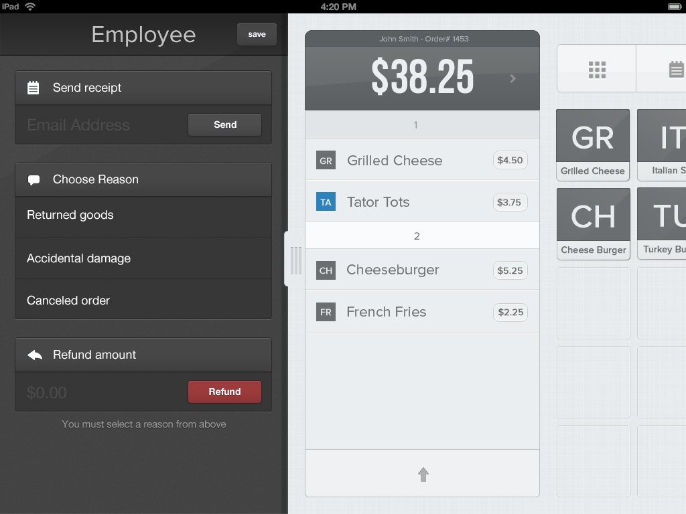
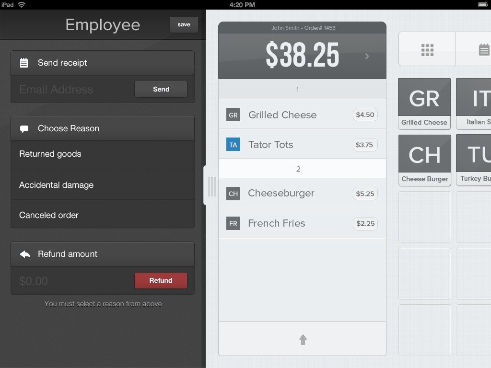

UX Research & Design
I worked in a team of four people creating a iPad based POS system that would provide the best experience for the user and allow them to confidently and efficiently enter transactions. This extensive process incorporated the various elements of user centered design such as user testing, competitive analysis, and heuristic analysis.
Research
Our first step was identifying key features that users needed to reach their main goals with our product. I was responsible for conducting user interviews and surveys that helped us identify these features. Then a card sorting exercise was conducted to better understand the user's informational mind set. My group then conducted an A/B testing to track user's reactions and behaviours towards different visual design aspects. In addition, my team conducted a competitive analysis in order to evaluate our products functionality in comparison with current POS systems out on the market.
Design
I worked on many aspects in the iterative design process including the selection of a muted color scheme and the placement of app features. We collaborated and had multiple brainstorming sessions before creating mock ups for us to defend our own ideas. After collaborating and meeting with our manager, we were able to recieve the approval to create a high fidelity prototype with invision.
 


User Testing
I did some independent research before assisting in the usability process which included participating in user testing sessions hosted by Depaul Human Computer Interaction students. The Depaul user testing process served as a model for our own. We noted the format of their user testing script and incorporated our own ideas to make it more effective for our own case. Our team then went on to recruit target users as well as fringe cases to test our prototype.
Final Features
- credit card, gift card, and cash payments
- receipt archive
- admin panel
- tax settings
- receipt (paper or electronic)
- coupons and discounts
- cash drawer operation
- order historyÂ
- inventory management (add, edit, delete, categories)
- Till management
- ZReport
- backend dashboard
- multiple printers
- employee management (clockin/out, login, etc)
- void/return
- special request
- takeout
- delivery
- multiple tickets open

Reflection
This experience has taught me a lot about working together in a group and the benefits of working in a collaborative space. I learned an extensive amount of information about user experience design and aspects of user interface design that increases affordability in a product. I know how to conduct user test to avoid my own biases and truly uncover user needs. I was able to design solutions that helped users and the business meet their goals.